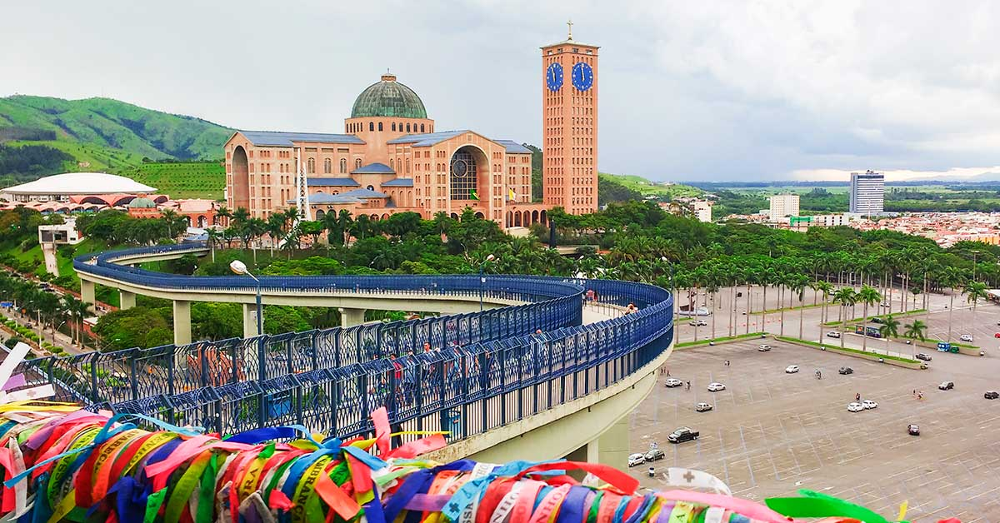
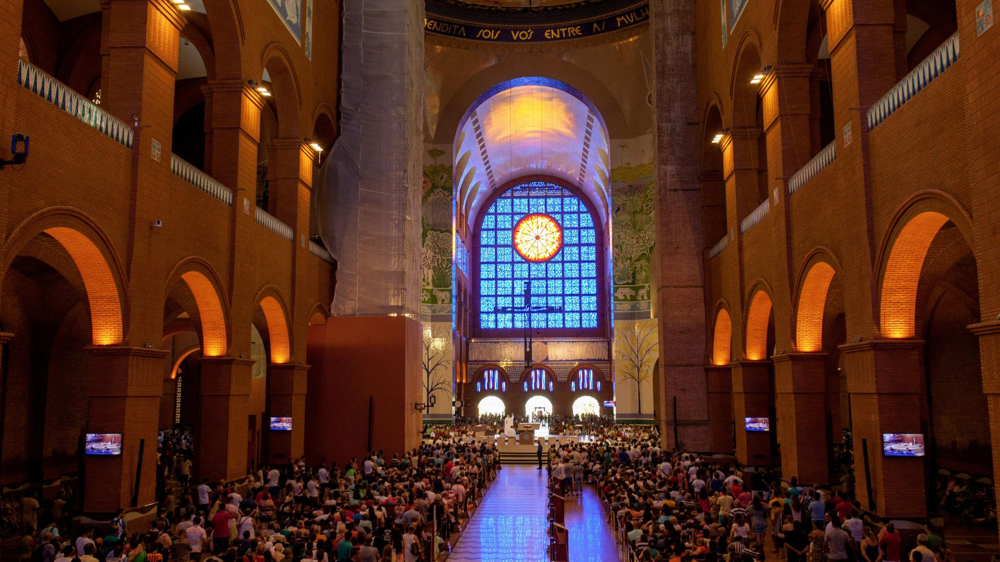
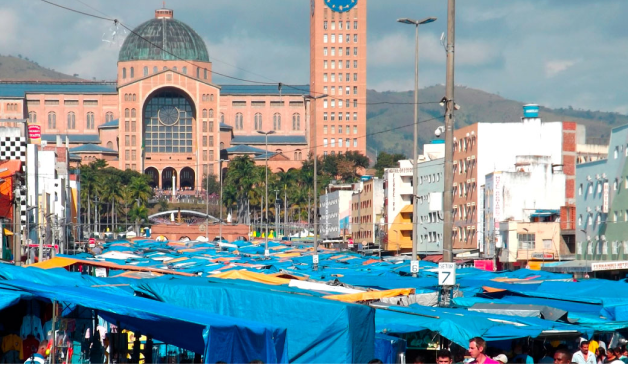

Como é viver no Japão
Conteúdo real do dia a dia. Um pouco sobre o criador do Ohaiojp, o portal dekasegi.
Como chegamos no Japão, qual nossa meta aqui, também trazendo conteúdo no YouTube.
Conteúdo real do dia a dia. Um pouco sobre o criador do Ohaiojp, o portal dekasegi.
Como chegamos no Japão, qual nossa meta aqui, também trazendo conteúdo no YouTube.
Meu nome é Wesley Miyaguchi e moro no Japão desde 2019.
Minha família veio junto comigo, minha esposa Shirley e meu filho Wislley, que tinha apenas
8 meses de idade na época, era bem novinho ainda. Hoje temos uma menina também, que se chama Ashilley, ela
nasceu na cidade
de Iwata-shi no hospital (磐田市立総合病院 - Iwata city Hospital), em 2022,
a mesma cidade onde moramos até hoje.
Minha esposa é natural de Campinas, e eu sou natural de Aparecida do Norte, interior de São Paulo. Aparecida é reconhecida nacionalmente como o maior centro de peregrinação católica do Brasil. A cidade abriga o Santuário Nacional de Nossa Senhora Aparecida, dedicado à padroeira do país, que atrai milhões de fiéis todos os anos, especialmente no dia 12 de outubro, data oficial da celebração.
Além de sua forte identidade religiosa, Aparecida também se destaca pelo seu comércio tradicional. A Feira de Aparecida, considerada o maior shopping a céu aberto do Brasil, reúne centenas de barracas com produtos religiosos, artesanato, lembranças e produtos eletrônicos em geral. Esse movimento constante faz da cidade um importante polo turístico e econômico da região.



Como a maioria das pessoas que vivem em Aparecida, eu também trabalhava na área do comércio eu era representante de vendas, responsável basicamente em vender, receber pelas vendas, criar artigos e promoções em redes sociais para atrair novos clientes, basiquinho rsrsrs.
Minha esposa por outro lado trabalhava em um ateliê, que ficava a apenas 100 metros de casa. Enfim! No Brasil a vida já não era mais aquilo que esperávamos, então decidimos mudar completamente nossa trajetória. Conversamos muito e resolvemos vir morar no Japão.
Após pesquisarmos muito, chegamos até a agência Htour Empregos no Japão.
Bom, eu já morei no Japão em
2007, então
usei um pouco da experiência que já tive pra encontrar uma agência que nos trouxesse segurança, assim então
tiramos todas nossas dúvidas e em seguida combinamos como que faríamos a partir dali.
Para quem deseja viver no Japão precisa entender uma coisa, agências são agências e empreiteiras são empreiteiras. Uma coisa é muito diferente da outra, então pesquise bem para não se confundir.
Saber separar isso logo no início, pode evitar muitas frustrações quando chegar no Japão.
Grande parte do que é combinado no Brasil nem sempre se aplica quando você chega no Japão. Por isso é importante saber onde vai morar, o nome da empreiteira, o tipo de serviço, os horários de trabalho e como será feito o desconto da passagem caso ela tenha sido financiada. Sair do Brasil já sabendo dessas informações faz uma grande diferença.
Ainda no Brasil, entre altos e baixos documentos vencidos, novas renovações um visto NEGADO!
Noooooossa, nessa hora bateu forte uma sensação de desanamo em.
Sabe o mais engraçado! Não nos abatemos e nem ficamos reclamando, o que fizemos de verdade foi,
esperar passar os longos seis meses para pedir novamente a a solicitação do visto,
na segunda vez eu fui pessoalmente a São Paulo no consulado juntamente com a Regiane, ela sempre
muito prestativa e auxiliando ainda mais de perto em menos de um mês nosso visto saiu.
Nessa hora começa a bater uma ansiedade sem tamanho, uma mistura de sentimentos que a gente não consegue entender, alegria, medo, tristeza, ansiedade, motivação, esperança e tudo mais que você imagina, o medo bate sim, mais é pelas pessoas que deixamos para trás, sem saber se vamos ter outra oportunidade de abraçá-las novamente, então! O psicológico tem que estar em mais perfeita condição de aguentar a porrada se caso vier acontecer alguma coisa com quem amamos, tenha isso em mente, você vai estar a horas de distância, pense nisso.
Chegou o grande dia, nosso embarque foi dia 28 de janeiro às 16 horas, saímos de São Paulo até o Rio de Janeiro, dali saímos às 19 horas e paramos na França e da França pro Japão, longas 36 horas de viagem, difícil mesmo foi sair do Brasil por vários motivos, outra hora conto em vídeo no meu canal do Youtube Japão no meu dia a dia.
Em solo japonês desembarcamos em Nagoya, um representante da empreiteira já nos esperava lá, nos auxiliou em algumas coisas comprou a passagem do ônibus que nos levou até Hamamatsu, um tantousha da empreiteira nos recepcionou e foi nos mostrar os apartamentos que estavam disponíveis para nós, eram três, mais ficamos que o primeiro que tínhamos visto.
Isso se chama translado, e se liga nisso aqui "ISSO NÃO É DE GRAÇA, VOCÊ PAGA E É CARO", cada um de nós pagou 25 mil yenes, até do meu filho foi cobrado e ele foi no colo da minha esposa. Não sabíamos que havia essa taxa de translado e mais outras despesas entrariam em nossas contas mais pra frente , então basicamente chegamos devendo a empreiteira, isso que não pode acontecer, algumas pessoas chegam no Japão no escuro e são pegas de surpresa, por isso reforço o que disse lá em cima, você precisa saber separar agência de empreiteira e saber como elas funcionam.
Na primeira semana de Japão fizemos nossos documentos japoneses que são:
Arrumamos uma creche brasileira pro Wislley ficar, de começo era o que precisávamos mesmo, mais pra frente ele entraria em uma creche japonêsa, mais isso explico depois.
No Brasil eu trabalhava bastante, uma média de 15 a 16 horas por dia, mais aqui no Japão o cansaço parece diferente, o trabalho em si já cansa muito, movimentos repetitivos, uma carga horária de 11 a 12 horas ou mais, de começo você parece que não vai dar conta, mais com o tempo o corpo vai se adaptando e você percebe que as dores diminuem e os dias já não são mais tão grandes, tudo é questão de costume.
Minha mãe, Joana, veio para o Japão em 2024. Morou conosco por um período e hoje mora em um apato por conta própria que conseguiu pelo no Village House, um conjunto de apartamentos bem conhecido por aqui, fiz um vídeo mostrando bem rapidinho o interior do apartamento dela é esse um que está lá em cima, no começo dessa página.
Uma coisa muito importante! Quanto menos você precisar da empreiteira melhor, depois que chegou se deve passagem pague, fique no apartamento até o fim do financiamento, até porque você deve pra eles e se acontecer de perder o emprego eles rapidinho arruma outro pra você, interesse mútuo néh você desempregado não consegue pagar ninguém, mais depois que terminou sua passagem arrume um apartamento por conta, você vai perceber que seus gastos mensais vão diminuir bastante.
Ainda trabalho em empreiteira e agora que caiu um pouco o serviço estamos fazendo a média de 10 a 12 horas dia, estamos por aqui nos esforçando e correndo atrás dos nossos sonhos, hoje em 2026/05/16 domingo às 9:46 da manhã que estou atualizando toda essa história, que às vezes pode não fazer muito sentido pra você, mais pra mim foi uma jornada de conhecimentos aprendizados e de muitas conquistas.
Hoje meus filhos estão estudando em escola japonesa, já estão falando bem o idioma e se adaptaram bem rapidinho
aos costumes japoneses, minha esposa está na mesma fábrica a mais de 4 anos e eu na correria de sempre, fábrica,
aro baito
(serviços temporários), canal do youtube, site que quero que transforme em um portal, sonhos e sonhos...
Parar não é opção, quero chegar longe e só chega longe quem não desiste, tô certo?
Deus abençoe todos vocês, e que seus sonhos se tornem a mais desejada realidade.
Um forte abraço.
Neste vídeo eu trago uma reflexão sobre algumas mudanças e decisões recentes relacionadas aos estrangeiros que vivem no Japão.
O assunto tem gerado bastante debate e até protestos em algumas comunidades, e aqui compartilho minha visão sobre esse cenário.
Nossa rotina de vida. hoje vou mostrar um pouco de como é viver aqui, as pequenas coisas do cotidiano e as experiências que fazem parte da vida de quem escolheu trabalhar e construir uma vida no Japão.
Nem sempre é fácil, mas cada dia traz uma nova história para contar.
Nem sempre as coisas acontecem como esperamos. Às vezes tentamos, insistimos e mesmo assim os resultados não aparecem.
Por isso estou refletindo sobre a possibilidade de começar uma nova etapa em outra província do Japão, sempre pedindo a Deus sabedoria para tomar a decisão certa.
Hoje foi um dia muito especial e cheio de emoções para nossa família aqui no Japão.
Foi o dia da despedida do meu filho do Hoikuen (creche japonesa), marcando o fim de uma etapa muito importante na vida dele.
Última atualização: Maio de 2026
↑